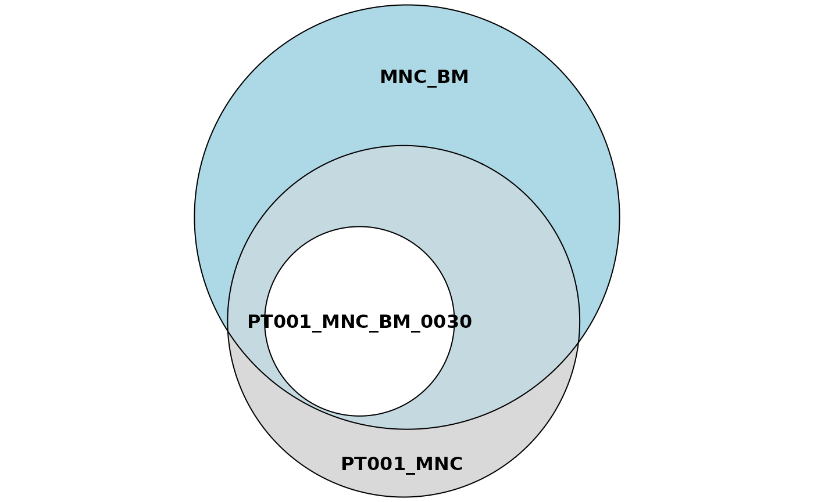
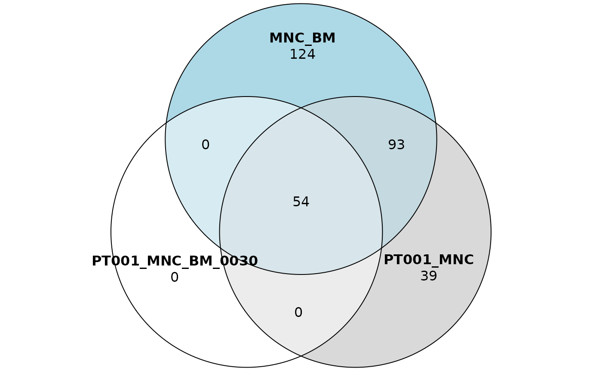

Setting up the workflow and first steps
Giulia Pais
San Raffaele Telethon Institute for Gene Therapy - SR-Tiget, Via Olgettina 60, 20132 Milano - Italia
giuliapais1@gmail.com, calabria.andrea@hsr.it
9 May 2023
Source:vignettes/workflow_start.Rmd
workflow_start.RmdIntroduction
ISAnalytics is an R package developed to analyze gene therapy vector insertion sites data identified from genomics next generation sequencing reads for clonal tracking studies.
In this vignette we will explain how to properly setup the workflow and the first steps of data import and data cleaning.
Setting up your workflow with dynamic vars
This section demonstrates how to properly setup your workflow with
ISAnalytics using the “dynamic vars” system.
From ISAnalytics 1.5.4 onwards, a new system here
referred to as “dynamic vars” has been implemented to improve the
flexibility of the package, by allowing multiple input formats based on
user needs rather than enforcing hard-coded names and structures. In
this way, users that do not follow the standard name conventions used by
the package have to put minimal effort into making their inputs
compliant to the package requirements.
There are 5 main categories of inputs you can customize:
- The “mandatory IS vars”: this set of variables is used to uniquely identify integration events across several functions implemented in the package
- The “annotation IS vars”: this set of variables holds the names of the columns that contain genomic annotations
- The “association file columns”: this set contains information on how metadata is structured
- The “VISPA2 stats specs”: this set contains information on the format of pool statistics files produced automatically by VISPA2
- The “matrix files suffixes”: this set contains all default file names for each quantification type and it is used by automated import functions
General approach
The general approach is based on the specification of predefined tags and their associated information in the form of simple data frames with a standard structure, namely:
| names | types | transform | flag | tag |
|---|---|---|---|---|
<name of the column> |
<type> |
<a lambda or NULL> |
<flag> |
<tag> |
where
-
namescontains the name of the column as a character -
typescontains the type of the column. Type should be expressed as a string and should be in one of the allowed types-
charfor character (strings) -
intfor integers -
logifor logical values (TRUE / FALSE) -
numericfor numeric values -
factorfor factors -
datefor generic date format - note that functions that need to read and parse files will try to guess the format and parsing may fail - One of the accepted date/datetime formats by lubridate,
you can use
ISAnalytics::date_formats()to view the accepted formats
-
-
transform: a purrr-style lambda that is applied immediately after importing. This is useful to operate simple transformations like removing unwanted characters or rounding to a certain precision. Please note that these lambdas need to be functions that accept a vector as input and only operate a transformation, aka they output a vector of the same length as the input. For more complicated applications that may require the value of other columns, appropriate functions should be manually applied post-import. -
flag: as of now, it should be set either torequiredoroptional- some functions internally check for only required tags presence and if those are missing from inputs they fail, signaling failure to the user -
tag: a specific tag expressed as a string - see Section @ref(tags)
Dynamic variables general approach
Tags
As already mentioned, certain functions included in the package
require the presence of specific tags (and associated column names) in
the input to work properly. You can always check what a tag means and
where it is used by using the function inspect_tags() and
providing in input the tags you want to check as a character vector.
inspect_tags("chromosome")
#> * TAG: chromosome
#> ℹ Description: Number of the chromosome
#> ℹ Functions that use it: top_targeted_genes, CIS_grubbs, compute_near_integrationsYou should make sure the tag matches the right information in your inputs by looking at the description of the tag. It is also possible to add entries that are not associated with any tag. Here is an overview of the critical tags for each category.
Mandatory IS vars
The presence of all mandatory IS vars is also checked and used in other functions - for example, when importing matrices it is ensured that all mandatory variables are present in the input, as declared in the look up table. Some functions may require information that needs to be specified as input, always check the documentation if you have doubts.
Annotation IS vars
Although genomic annotations are not necessarily required to work with ISAnalytics, some operations do require annotation - if you’re working with matrices that are not annotated you can either annotate them with a tool of your choice or skip the steps that require annotation.
Customizing dynamic vars
For each category of dynamic vars there are 3 functions:
- A getter - returns the current lookup table
- A setter - allows the user to change the current lookup table
- A resetter - reverts all changes to defaults
Setters will take in input the new variables, validate and eventually change the lookup table. If validation fails an error will be thrown instead, inviting the user to review the inputs. Moreover, if some of the critical tags for the category are missing, a warning appears, with a list of the missing ones.
Let’s take a look at some examples.
On package loading, all lookup tables are set to default values. For example, for mandatory IS vars we have:
mandatory_IS_vars(TRUE)
#> # A tibble: 3 × 5
#> names types transform flag tag
#> <chr> <chr> <list> <chr> <chr>
#> 1 chr char <NULL> required chromosome
#> 2 integration_locus int <NULL> required locus
#> 3 strand char <NULL> required is_strandLet’s suppose our matrices follow a different standard, and integration events are characterized by 5 fields, like so (the example contains random data):
| chrom | position | strand | gap | junction |
|---|---|---|---|---|
| “chr1” | 342543 | “+” | 100 | 50 |
| … | … | … | … | … |
To make this work with ISAnalytics functions, we need to compile the lookup table like this:
new_mand_vars <- tibble::tribble(
~names, ~types, ~transform, ~flag, ~tag,
"chrom", "char", ~ stringr::str_replace_all(.x, "chr", ""), "required",
"chromosome",
"position", "int", NULL, "required", "locus",
"strand", "char", NULL, "required", "is_strand",
"gap", "int", NULL, "required", NA_character_,
"junction", "int", NULL, "required", NA_character_
)Notice that we have specified a transformation for the “chromosome” tag: in this case we would like to have only the number of the chromosome without the prefix “chr” - this lambda will get executed immediately after import.
To set the new variables simply do:
set_mandatory_IS_vars(new_mand_vars)
#> Mandatory IS vars successfully changed
mandatory_IS_vars(TRUE)
#> # A tibble: 5 × 5
#> names types transform flag tag
#> <chr> <chr> <list> <chr> <chr>
#> 1 chrom char <formula> required chromosome
#> 2 position int <NULL> required locus
#> 3 strand char <NULL> required is_strand
#> 4 gap int <NULL> required NA
#> 5 junction int <NULL> required NAIf you don’t specify a critical tag, a warning message is displayed:
new_mand_vars[1, ]$tag <- NA_character_
set_mandatory_IS_vars(new_mand_vars)
#> Warning: Warning: important tags missing
#> ℹ Some tags are required for proper execution of some functions. If these tags are not provided, execution of dependent functions might fail. Review your inputs carefully.
#> ℹ Missing tags: chromosome
#> ℹ To see where these are involved type `inspect_tags(c('chromosome'))`
#> Mandatory IS vars successfully changed
mandatory_IS_vars(TRUE)
#> # A tibble: 5 × 5
#> names types transform flag tag
#> <chr> <chr> <list> <chr> <chr>
#> 1 chrom char <formula> required NA
#> 2 position int <NULL> required locus
#> 3 strand char <NULL> required is_strand
#> 4 gap int <NULL> required NA
#> 5 junction int <NULL> required NAIf you change your mind and want to go back to defaults:
reset_mandatory_IS_vars()
#> Mandatory IS vars reset to default
mandatory_IS_vars(TRUE)
#> # A tibble: 3 × 5
#> names types transform flag tag
#> <chr> <chr> <list> <chr> <chr>
#> 1 chr char <NULL> required chromosome
#> 2 integration_locus int <NULL> required locus
#> 3 strand char <NULL> required is_strandThe principle is the same for annotation IS vars, association file columns and VISPA2 stats specs. Here is a summary of the functions for each:
- mandatory IS vars:
mandatory_IS_vars(),set_mandatory_IS_vars(),reset_mandatory_IS_vars() - annotation IS vars:
annotation_IS_vars(),set_annotation_IS_vars(),reset_annotation_IS_vars() - association file columns:
association_file_columns(),set_af_columns_def(),reset_af_columns_def() - VISPA2 stats specs:
iss_stats_specs(),set_iss_stats_specs(),reset_iss_stats_specs
Matrix files suffixes work slightly different:
matrix_file_suffixes()
#> # A tibble: 10 × 3
#> quantification matrix_type file_suffix
#> <chr> <chr> <chr>
#> 1 seqCount annotated seqCount_matrix.no0.annotated.tsv.gz
#> 2 seqCount not_annotated seqCount_matrix.tsv.gz
#> 3 fragmentEstimate annotated fragmentEstimate_matrix.no0.annotated.tsv.gz
#> 4 fragmentEstimate not_annotated fragmentEstimate_matrix.tsv.gz
#> 5 barcodeCount annotated barcodeCount_matrix.no0.annotated.tsv.gz
#> 6 barcodeCount not_annotated barcodeCount_matrix.tsv.gz
#> 7 cellCount annotated cellCount_matrix.no0.annotated.tsv.gz
#> 8 cellCount not_annotated cellCount_matrix.tsv.gz
#> 9 ShsCount annotated ShsCount_matrix.no0.annotated.tsv.gz
#> 10 ShsCount not_annotated ShsCount_matrix.tsv.gzTo change this lookup table use the function
set_matrix_file_suffixes(): the function will ask to
specify a suffix for each quantification and for both annotated and not
annotated versions. These suffixes are used in the automated matrix
import function when scanning the file system.
To reset all lookup tables to their default configurations you can
also use the function reset_dyn_vars_config(), which
reverts all changes.
FAQs
Do I have to do this every time the package loads?
No, if you frequently have to work with a non-standard settings
profile, you can use the functions export_ISA_settings()
and import_ISA_settings(): these functions allow the
import/export of setting profiles in *.json format.
Once you set your variables for the first time through the procedure described before, simply call the export function and all will be saved to a json file, which can then be imported for the next workflow.
Reporting progress
From ISAnalytics 1.7.4, functions that make use of
parallel workers or process long tasks report progress via the functions
offered by progressr.
To enable progress bars for all functions in ISAnalytics do
before calling other functions. For customizing the appearance of the
progress bar please refer to progressr documentation.
Introduction to ISAnalytics import functions
family
In this section we’re going to explain more in detail how functions of the import family should be used, the most common workflows to follow and more.
Designed to work with VISPA2 pipeline
The vast majority of the functions included in this package is designed to work in combination with VISPA2 pipeline (Giulio Spinozzi Andrea Calabria, 2017). If you don’t know what it is, we strongly recommend you to take a look at these links:
- Article: VISPA2:
Article
- BitBucket Wiki: VISPA2 Wiki
File system structure generated
VISPA2 produces a standard file system structure starting from a folder you specify as your workbench or root. The structure always follows this schema:
- root/
- Optional intermediate folders
- Projects (PROJECTID)
- bam
- bcmuxall
- bed
- iss
- Pools (concatenatePoolIDSeqRun)
- quality
- quantification
- Pools (concatenatePoolIDSeqRun)
- report
- Projects (PROJECTID)
- Optional intermediate folders
Most of the functions implemented expect a standard file system structure as the one described above.
Notation
We call an “integration matrix” a tabular structure characterized by:
- k mandatory columns of genomic features that characterize a viral
insertion site in the genome, which are specified via
mandatory_IS_vars(). By default they’re set tochr,integration_locusandstrand - a (optional) annotation columns, provided via
annotation_IS_vars(). By default they’re set toGeneNameandGeneStrand - A variable number n of sample columns containing the quantification of the corresponding integration site
#> # A tibble: 3 × 8
#> chr integration_locus strand GeneName GeneStrand exp1 exp2 exp3
#> <chr> <dbl> <chr> <chr> <chr> <dbl> <dbl> <dbl>
#> 1 1 12324 + NFATC3 + 4553 5345 NA
#> 2 6 657532 + LOC100507487 + 76 545 5
#> 3 7 657532 + EDIL3 - NA 56 NAThe package uses a more compact form of these matrices, limiting the amount of NA values and optimizing time and memory consumption. For more info on this take a look at: Tidy data
While integration matrices contain the actual data, we also need
associated sample metadata to perform the vast majority of the analyses.
ISAnalytics expects the metadata to be contained in a so
called “association file”, which is a simple tabular file.
To generate a blank association file you can use the function
generate_blank_association_file. You can also view the
standard column names with association_file_columns().
Importing metadata
To import metadata we use import_association_file().
This function is not only responsible for reading the file into the R
environment as a data frame, but it is capable to perform a file system
alignment operation, that is, for each project and pool contained in the
file, it scans the file system starting from the provided root to check
if the corresponding folders (contained in the appropriate column) can
be found. Remember that to work properly, this operation expects a
standard folder structure, such as the one provided by VISPA2. This
function also produces an interactive HTML report.
fs_path <- generate_default_folder_structure()
withr::with_options(list(ISAnalytics.reports = FALSE), code = {
af <- import_association_file(fs_path$af, root = fs_path$root)
})
#> *** Association file import summary ***
#> ℹ For detailed report please set option 'ISAnalytics.reports' to TRUE
#> Parsing problems detected: FALSE
#> Date parsing problems: FALSE
#> Column problems detected: FALSE
#> NAs found in important columns: FALSE
#> File system alignment: no problems detected#> # A tibble: 6 × 74
#> ProjectID FUSIONID PoolID TagSequence SubjectID VectorType VectorID
#> <chr> <chr> <chr> <chr> <chr> <chr> <chr>
#> 1 PJ01 ET#382.46 POOL01 LTR75LC38 PT001 lenti GLOBE
#> 2 PJ01 ET#381.40 POOL01 LTR53LC32 PT001 lenti GLOBE
#> 3 PJ01 ET#381.9 POOL01 LTR83LC66 PT001 lenti GLOBE
#> 4 PJ01 ET#381.71 POOL01 LTR27LC94 PT001 lenti GLOBE
#> 5 PJ01 ET#381.2 POOL01 LTR69LC52 PT001 lenti GLOBE
#> 6 PJ01 ET#382.28 POOL01 LTR37LC2 PT001 lenti GLOBE
#> # ℹ 67 more variables: ExperimentID <chr>, Tissue <chr>, TimePoint <chr>,
#> # DNAFragmentation <chr>, PCRMethod <chr>, TagIDextended <chr>,
#> # Keywords <chr>, CellMarker <chr>, TagID <chr>, NGSProvider <chr>,
#> # NGSTechnology <chr>, ConverrtedFilesDir <chr>, ConverrtedFilesName <chr>,
#> # SourceFileFolder <chr>, SourceFileNameR1 <chr>, SourceFileNameR2 <chr>,
#> # DNAnumber <chr>, ReplicateNumber <int>, DNAextractionDate <date>,
#> # DNAngUsed <dbl>, LinearPCRID <chr>, LinearPCRDate <date>, …Function arguments
You can change several arguments in the function call to modify the behavior of the function.
-
root- Set it to
NULLif you only want to import the association file without file system alignment. Beware that some of the automated import functionalities won’t work! - Set it to a non-empty string (path on disk): in this case, the
column associated with the tag
proj_folder(by defaultPathToFolderProjectID) in the file should contain relative file paths, so if for example your root is set to “/home” and your project folder in the association file is set to “/PJ01”, the function will check that the directory exists under “/home/PJ01” - Set it to an empty string: ideal if you want to store paths in the
association file as absolute file paths. In this case
if your project folder is in “/home/PJ01” you should have this path in
the
PathToFolderProjectIDcolumn and setroot= “”
- Set it to
-
dates_format: a string that is useful for properly parsing dates from tabular formats -
separator: the column separator used in the file. Defaults to “\t”, other valid separators are “,” (comma), “;” (semi-colon) -
filter_for: you can set this argument to a named list of filters, where names are column names. For examplelist(ProjectID = "PJ01")will return only those rows whose attribute “ProjectID” equals “PJ01” -
import_iss: eitherTRUEorFALSE. If set toTRUE, performs an internal call toimport_Vispa2_stats()(see next section), and appends the imported files to metadata -
convert_tp: eitherTRUEorFALSE. Converts the column containing the time point expressed in days in months and years (with custom logic). -
report_path- Set it to
NULLto avoid the production of a report - Set it to a folder (if it doesn’t exist, it gets automatically created)
- Set it to
-
...: additional named arguments to pass toimport_Vispa2_stats()if you chose to import VISPA2 stats
For further details view the dedicated function documentation.
NOTE: the function supports files in various formats as long
as the correct separator is provided. It also accepts files in
*.xlsx and *.xls formats but we do not
recommend using these since the report won’t include a detailed summary
of potential parsing problems.
The interactive report includes useful information such as
- General issues: parsing problems, missing columns, NA values in important columns etc. This allows you to immediately spot problems and correct them before proceeding with the analyses
- File system alignment issues: very useful to know if all data can be imported or folders are missing
- Info on VISPA2 stats (if
import_isswasTRUE)
Importing VISPA2 stats files
VISPA2 automatically produces summary files for each pool holding
information that can be useful for other analyses downstream, so it is
recommended to import them in the first steps of the workflow. To do
that, you can use import_VISPA2_stats:
vispa_stats <- import_Vispa2_stats(
association_file = af,
join_with_af = FALSE,
report_path = NULL
)#> # A tibble: 6 × 14
#> POOL TAG RUN_NAME PHIX_MAPPING PLASMID_MAPPED_BYPOOL BARCODE_MUX
#> <chr> <chr> <chr> <dbl> <dbl> <dbl>
#> 1 POOL01-1 LTR75LC38 PJ01|POOL01… 43586699 2256176 645026
#> 2 POOL01-1 LTR53LC32 PJ01|POOL01… 43586699 2256176 652208
#> 3 POOL01-1 LTR83LC66 PJ01|POOL01… 43586699 2256176 451519
#> 4 POOL01-1 LTR27LC94 PJ01|POOL01… 43586699 2256176 426500
#> 5 POOL01-1 LTR69LC52 PJ01|POOL01… 43586699 2256176 18300
#> 6 POOL01-1 LTR37LC2 PJ01|POOL01… 43586699 2256176 729327
#> # ℹ 8 more variables: LTR_IDENTIFIED <dbl>, TRIMMING_FINAL_LTRLC <dbl>,
#> # LV_MAPPED <dbl>, BWA_MAPPED_OVERALL <dbl>, ISS_MAPPED_OVERALL <dbl>,
#> # RAW_READS <lgl>, QUALITY_PASSED <lgl>, ISS_MAPPED_PP <lgl>The function requires as input the imported and file system aligned
association file and it will scan the iss folder for files
that match some known prefixes (defaults are already provided but you
can change them as you see fit). You can either choose to join the
imported data frames with the association file in input and obtain a
single data frame or keep it as it is, just set the parameter
join_with_af accordingly. At the end of the process an HTML
report is produced, signaling potential problems.
You can directly call this function when you import the association
file by setting the import_iss argument of
import_association_file to TRUE.
Importing a single integration matrix
If you want to import a single integration matrix you can do so by
using the import_single_Vispa2Matrix() function. This
function reads the file and converts it into a tidy structure: several
different formats can be read, since you can specify the column
separator.
matrix_path <- fs::path(
fs_path$root,
"PJ01",
"quantification",
"POOL01-1",
"PJ01_POOL01-1_seqCount_matrix.no0.annotated.tsv.gz"
)
matrix <- import_single_Vispa2Matrix(matrix_path)#> # A tibble: 802 × 7
#> chr integration_locus strand GeneName GeneStrand CompleteAmplificatio…¹
#> <chr> <int> <chr> <chr> <chr> <chr>
#> 1 16 68164148 + NFATC3 + PJ01_POOL01_LTR75LC38…
#> 2 4 129390130 + LOC100507487 + PJ01_POOL01_LTR75LC38…
#> 3 5 84009671 - EDIL3 - PJ01_POOL01_LTR75LC38…
#> 4 12 54635693 - CBX5 - PJ01_POOL01_LTR75LC38…
#> 5 2 181930711 + UBE2E3 + PJ01_POOL01_LTR75LC38…
#> 6 20 35920986 + MANBAL + PJ01_POOL01_LTR75LC38…
#> 7 22 26900625 + TFIP11 - PJ01_POOL01_LTR75LC38…
#> 8 3 106580075 + LINC00882 - PJ01_POOL01_LTR75LC38…
#> 9 1 16186297 - SPEN + PJ01_POOL01_LTR75LC38…
#> 10 17 61712419 + MAP3K3 + PJ01_POOL01_LTR75LC38…
#> # ℹ 792 more rows
#> # ℹ abbreviated name: ¹CompleteAmplificationID
#> # ℹ 1 more variable: Value <int>For details on usage and arguments view the dedicated function documentation.
Automated integration matrices import
Integration matrices import can be automated when when the
association file is imported with the file system alignment option.
ISAnalytics provides a function,
import_parallel_Vispa2Matrices(), that allows to do just
that in a fast and efficient way.
withr::with_options(list(ISAnalytics.reports = FALSE), {
matrices <- import_parallel_Vispa2Matrices(af,
c("seqCount", "fragmentEstimate"),
mode = "AUTO"
)
})Function arguments
Let’s see how the behavior of the function changes when we change arguments.
association_file argument
You can supply a data frame object, imported via
import_association_file() (see Section @ref(metadata)) or a
string (the path to the association file on disk). In the first scenario
it is necessary to perform file system alignment, since the function
scans the folders contained in the column Path_quant, while
in the second case you should also provide as additional
named argument (to ...) an appropriate
root: the function will internally call
import_association_file(), if you don’t have specific needs
we recommend doing the 2 steps separately and provide the association
file as a data frame.
quantification_type argument
For each pool there may be multiple available quantification types,
that is, different matrices containing the same samples and same genomic
features but a different quantification. A typical workflow contemplates
seqCount and fragmentEstimate, all the
supported quantification types can be viewed with
quantification_types().
matrix_type argument
As we mentioned in Section @ref(notation), annotation columns are
optional and may not be included in some matrices. This argument allows
you to specify the function to look for only a specific type of matrix,
either annotated or not_annotated.
File suffixes for matrices are specified via
matrix_file_suffixes().
workers argument
Sets the number of parallel workers to set up. This highly depends on the hardware configuration of your machine.
multi_quant_matrix argument
When importing more than one quantification at once, it can be very
handy to have all data in a single data frame rather than two. If set to
TRUE the function will internally call
comparison_matrix() and produce a single data frames that
has a dedicated column for each quantification. For example, for the
matrices we’ve imported before:
#> # A tibble: 6 × 8
#> chr integration_locus strand GeneName GeneStrand CompleteAmplificationID
#> <chr> <int> <chr> <chr> <chr> <chr>
#> 1 16 68164148 + NFATC3 + PJ01_POOL01_LTR75LC38_…
#> 2 4 129390130 + LOC100507487 + PJ01_POOL01_LTR75LC38_…
#> 3 5 84009671 - EDIL3 - PJ01_POOL01_LTR75LC38_…
#> 4 12 54635693 - CBX5 - PJ01_POOL01_LTR75LC38_…
#> 5 2 181930711 + UBE2E3 + PJ01_POOL01_LTR75LC38_…
#> 6 20 35920986 + MANBAL + PJ01_POOL01_LTR75LC38_…
#> # ℹ 2 more variables: fragmentEstimate <dbl>, seqCount <int>
report_path argument
As other import functions, also
import_parallel_Vispa2Matrices() produces an interactive
report, use this argument to set the appropriate path were the report
should be saved.
mode argument
Since ISAnalytics 1.8.3 this argument can only be set to
AUTO.
What do you want to import?
In a fully automated mode, the function will try to import everything
that is contained in the input association file. This means that if you
need to import only a specific set of projects/pools, you will need to
filter the association file accordingly prior calling the function (you
can easily do that via the filter_for argument as explained
in Section @ref(metadata)).
How to deal with duplicates?
When scanning folders for files that match a given pattern (in our case
the function looks for matrices that match the quantification type and
the matrix type), it is very possible that the same folder contains
multiple files for the same quantification. Of course this is not
recommended, we suggest to move the duplicated files in a sub directory
or remove them if they’re not necessary, but in case this happens, you
need to set two other arguments (described in the next sub sections) to
“help” the function discriminate between duplicates. Please note that if
such discrimination is not possible no files are imported.
patterns argument
Providing a set of patterns (interpreted as regular expressions) helps the function to choose between duplicated files if any are found. If you’re confident your folders don’t contain any duplicates feel free to ignore this argument.
matching_opt argument
This argument is relevant only if patterns isn’t
NULL. Tells the function how to match the given patterns if
multiple are supplied: ALL means keep only those files
whose name matches all the given patterns, ANY means keep
only those files whose name matches any of the given patterns and
OPTIONAL expresses a preference, try to find files that
contain the patterns and if you don’t find any return whatever you
find.
... argument
Additional named arguments to supply to
comparison_matrix() and
import_single_Vispa2_matrix
Notes
Earlier versions of the package featured two separated functions,
import_parallel_Vispa2Matrices_auto() and
import_parallel_Vispa2Matrices_interactive(). Those
functions are now officially deprecated (since
ISAnalytics 1.3.3) and will be defunct on the next release
cycle.
Data cleaning and pre-processing
This section goes more in detail on some data cleaning and pre-processing operations you can perform with this package.
ISAnalytics offers several different functions for cleaning and pre-processing your data.
- Recalibration: identifies integration events that are near to each
other and condenses them into a single event whenever appropriate -
compute_near_integrations() - Outliers identification and removal: identifies samples that are
considered outliers according to user-defined logic and filters them out
-
outlier_filter() - Collision removal: identifies collision events between independent
samples -
remove_collisions() - Filter based on cell lineage purity: identifies and removes
contamination between different cell types -
purity_filter() - Data and metadata aggregation: allows the union of biological
samples from single pcr replicates or other arbitrary aggregations -
aggregate_values_by_key(),aggregate_metadata()
Removing collisions
In this section we illustrate the functions dedicated to collision removal.
What is a collision and why should you care?
We’re not going into too much detail here, but we’re going to explain in a very simple way what a “collision” is and how the function in this package deals with them.
We say that an integration (aka a unique combination of
mandatory_IS_vars()) is a collision if this
combination is shared between different independent samples: an
independent sample is a unique combination of metadata fields specified
by the user. The reason behind this is that it’s highly improbable to
observe the very same integration in two different independent samples
and this phenomenon might be an indicator of some kind of contamination
in the sequencing phase or in PCR phase, for this reason we might want
to exclude such contamination from our analysis.
ISAnalytics provides a function that processes the imported
data for the removal or reassignment of these “problematic”
integrations, remove_collisions().
The processing is done using the sequence count value, so the corresponding matrix is needed for this operation.
The logic behind the function
The remove_collisions() function follows several logical
steps to decide whether an integration is a collision and if it is it
decides whether to re-assign it or remove it entirely based on different
criteria.
Identifying the collisions
The function uses the information stored in the association file to assess which independent samples are present and counts the number of independent samples for each integration: those who have a count > 1 are considered collisions.
| chr | integration_locus | strand | seqCount | CompleteAmplificationID | SubjectID | ProjectID |
|---|---|---|---|---|---|---|
| 1 | 123454 | + | 653 | SAMPLE1 | SUBJ01 | PJ01 |
| 1 | 123454 | + | 456 | SAMPLE2 | SUBJ02 | PJ01 |
Re-assign vs remove
Once the collisions are identified, the function follows 3 steps where it tries to re-assign the combination to a single independent sample. The criteria are:
- Compare dates: if it’s possible to have an absolute ordering on dates, the integration is re-assigned to the sample that has the earliest date. If two samples share the same date it’s impossible to decide, so the next criteria is tested
- Compare replicate number: if a sample has the same integration in more than one replicate, it’s more probable the integration is not an artifact. If it’s possible to have an absolute ordering, the collision is re-assigned to the sample whose grouping is largest
- Compare the sequence count value: if the previous criteria wasn’t
sufficient to make a decision, for each group of independent samples
it’s evaluated the sum of the sequence count value - for each group
there is a cumulative value of the sequence count and this is compared
to the value of other groups. If there is a single group which has a
ratio n times bigger than other groups, this one is chosen for
re-assignment. The factor n is passed as a parameter in the function
(
reads_ratio), the default value is 10.
If none of the criteria were sufficient to make a decision, the integration is simply removed from the matrix.
Usage
data("integration_matrices", package = "ISAnalytics")
data("association_file", package = "ISAnalytics")
## Multi quantification matrix
no_coll <- remove_collisions(
x = integration_matrices,
association_file = association_file,
report_path = NULL
)
#> Identifying collisions...
#> Processing collisions...
#> Finished!
## Matrix list
separated <- separate_quant_matrices(integration_matrices)
no_coll_list <- remove_collisions(
x = separated,
association_file = association_file,
report_path = NULL
)
#> Identifying collisions...
#> Processing collisions...
#> Finished!
## Only sequence count
no_coll_single <- remove_collisions(
x = separated$seqCount,
association_file = association_file,
quant_cols = c(seqCount = "Value"),
report_path = NULL
)
#> Identifying collisions...
#> Processing collisions...
#> Finished!Important notes on the association file:
- You have to be sure your association file is properly filled out. The function requires you to specify a date column (by default “SequencingDate”), you have to ensure this column doesn’t contain NA values or incorrect values.
The function accepts different inputs, namely:
- A multi-quantification matrix: this is always the recommended approach
- A named list of matrices where names are quantification types in
quantification_types() - The single sequence count matrix: this is not the recommended approach since it requires a realignment step for other quantification matrices if you have them.
If the option ISAnalytics.reports is active, an
interactive report in HTML format will be produced at the specified
path.
Re-align other matrices
If you’ve given as input the standalone sequence count matrix to
remove_collisions(), to realign other matrices you have to
call the function realign_after_collisions(), passing as
input the processed sequence count matrix and the named list of other
matrices to realign. NOTE: the names in the list must be
quantification types.
other_realigned <- realign_after_collisions(
sc_matrix = no_coll_single,
other_matrices = list(fragmentEstimate = separated$fragmentEstimate)
)Performing data and metadata aggregation
In this section we’re going to explain in detail how to use functions of the aggregate family, namely:
Aggregating metadata
We refer to information contained in the association file as
“metadata”: sometimes it’s useful to obtain collective information based
on a certain group of variables we’re interested in. The function
aggregate_metadata() does just that: according to the
grouping variables, meaning the names of the columns in the association
file to perform a group_by operation with,it creates a
summary. You can fully customize the summary by providing a “function
table” that tells the function which operation should be applied to
which column and what name to give to the output column. A default is
already supplied:
#> # A tibble: 15 × 4
#> Column Function Args Output_colname
#> <chr> <list> <lgl> <chr>
#> 1 FusionPrimerPCRDate <formula> NA {.col}_min
#> 2 LinearPCRDate <formula> NA {.col}_min
#> 3 VCN <formula> NA {.col}_avg
#> 4 ng DNA corrected <formula> NA {.col}_avg
#> 5 Kapa <formula> NA {.col}_avg
#> 6 ng DNA corrected <formula> NA {.col}_sum
#> 7 ulForPool <formula> NA {.col}_sum
#> 8 BARCODE_MUX <formula> NA {.col}_sum
#> 9 TRIMMING_FINAL_LTRLC <formula> NA {.col}_sum
#> 10 LV_MAPPED <formula> NA {.col}_sum
#> 11 BWA_MAPPED_OVERALL <formula> NA {.col}_sum
#> 12 ISS_MAPPED_OVERALL <formula> NA {.col}_sum
#> 13 PCRMethod <formula> NA {.col}
#> 14 NGSTechnology <formula> NA {.col}
#> 15 DNAnumber <formula> NA {.col}You can either provide purrr-style lambdas (as given in the example
above), or simply specify the name of the function and additional
parameters as a list in a separated column. If you choose to provide
your own table you should maintain the column names for the function to
work properly. For more details on this take a look at the function
documentation ?default_meta_agg.
Typical workflow
- Import the association file via
import_assocition_file(). If you need more information on import function please view the vignette “How to use import functions”:vignette("how_to_import_functions", package="ISAnalytics"). - Perform aggregation
data("association_file", package = "ISAnalytics")
aggregated_meta <- aggregate_metadata(association_file = association_file)#> # A tibble: 20 × 19
#> SubjectID CellMarker Tissue TimePoint FusionPrimerPCRDate_min
#> <chr> <chr> <chr> <chr> <date>
#> 1 PT001 MNC BM 0030 2016-11-03
#> 2 PT001 MNC BM 0060 2016-11-03
#> 3 PT001 MNC BM 0090 2016-11-03
#> 4 PT001 MNC BM 0180 2016-11-03
#> 5 PT001 MNC BM 0360 2017-04-21
#> 6 PT001 MNC PB 0030 2016-11-03
#> 7 PT001 MNC PB 0060 2016-11-03
#> 8 PT001 MNC PB 0090 2016-11-03
#> 9 PT001 MNC PB 0180 2016-11-03
#> 10 PT001 MNC PB 0360 2017-04-21
#> 11 PT002 MNC BM 0030 2017-04-21
#> 12 PT002 MNC BM 0060 2017-05-05
#> 13 PT002 MNC BM 0090 2017-05-05
#> 14 PT002 MNC BM 0180 2017-05-16
#> 15 PT002 MNC BM 0360 2018-03-12
#> 16 PT002 MNC PB 0030 2017-04-21
#> 17 PT002 MNC PB 0060 2017-05-05
#> 18 PT002 MNC PB 0090 2017-05-05
#> 19 PT002 MNC PB 0180 2017-05-05
#> 20 PT002 MNC PB 0360 2018-03-12
#> # ℹ 14 more variables: LinearPCRDate_min <date>, VCN_avg <dbl>,
#> # `ng DNA corrected_avg` <dbl>, Kapa_avg <dbl>, `ng DNA corrected_sum` <dbl>,
#> # ulForPool_sum <dbl>, BARCODE_MUX_sum <int>, TRIMMING_FINAL_LTRLC_sum <int>,
#> # LV_MAPPED_sum <int>, BWA_MAPPED_OVERALL_sum <int>,
#> # ISS_MAPPED_OVERALL_sum <int>, PCRMethod <chr>, NGSTechnology <chr>,
#> # DNAnumber <chr>Aggregation of values by key
ISAnalytics contains useful functions to aggregate the
values contained in your imported matrices based on a key, aka a single
column or a combination of columns contained in the association file
that are related to the samples.
Typical workflow
- Import your association file
- Import integration matrices via
import_parallel_Vispa2Matrices() - Perform aggregation
data("integration_matrices", package = "ISAnalytics")
data("association_file", package = "ISAnalytics")
aggreg <- aggregate_values_by_key(
x = integration_matrices,
association_file = association_file,
value_cols = c("seqCount", "fragmentEstimate")
)#> # A tibble: 1,074 × 11
#> chr integration_locus strand GeneName GeneStrand SubjectID CellMarker
#> <chr> <dbl> <chr> <chr> <chr> <chr> <chr>
#> 1 1 8464757 - RERE - PT001 MNC
#> 2 1 8464757 - RERE - PT001 MNC
#> 3 1 8607357 + RERE - PT001 MNC
#> 4 1 8607357 + RERE - PT001 MNC
#> 5 1 8607357 + RERE - PT001 MNC
#> 6 1 8607362 - RERE - PT001 MNC
#> 7 1 8850362 + RERE - PT002 MNC
#> 8 1 11339120 + UBIAD1 + PT001 MNC
#> 9 1 11339120 + UBIAD1 + PT001 MNC
#> 10 1 11339120 + UBIAD1 + PT001 MNC
#> Tissue TimePoint seqCount_sum fragmentEstimate_sum
#> <chr> <chr> <dbl> <dbl>
#> 1 BM 0030 542 3.01
#> 2 BM 0060 1 1.00
#> 3 BM 0060 1 1.00
#> 4 BM 0180 1096 5.01
#> 5 BM 0360 330 34.1
#> 6 BM 0180 1702 4.01
#> 7 BM 0360 562 3.01
#> 8 BM 0060 1605 8.03
#> 9 PB 0060 1 1.00
#> 10 PB 0180 1 1.00
#> # ℹ 1,064 more rowsThe function aggregate_values_by_key can perform the
aggregation both on the list of matrices and a single matrix.
Changing parameters to obtain different results
The function has several different parameters that have default values that can be changed according to user preference.
-
Changing the
keyvalue
You can change the value of the parameter key as you see fit. This parameter should contain one or multiple columns of the association file that you want to include in the grouping when performing the aggregation. The default value is set toc("SubjectID", "CellMarker", "Tissue", "TimePoint")(same default key as theaggregate_metadatafunction).
agg1 <- aggregate_values_by_key(
x = integration_matrices,
association_file = association_file,
key = c("SubjectID", "ProjectID"),
value_cols = c("seqCount", "fragmentEstimate")
)#> # A tibble: 577 × 9
#> chr integration_locus strand GeneName GeneStrand SubjectID ProjectID
#> <chr> <dbl> <chr> <chr> <chr> <chr> <chr>
#> 1 1 8464757 - RERE - PT001 PJ01
#> 2 1 8607357 + RERE - PT001 PJ01
#> 3 1 8607362 - RERE - PT001 PJ01
#> 4 1 8850362 + RERE - PT002 PJ01
#> 5 1 11339120 + UBIAD1 + PT001 PJ01
#> 6 1 12341466 - VPS13D + PT002 PJ01
#> 7 1 14034054 - PRDM2 + PT002 PJ01
#> 8 1 16186297 - SPEN + PT001 PJ01
#> 9 1 16602483 + FBXO42 - PT001 PJ01
#> 10 1 16602483 + FBXO42 - PT002 PJ01
#> seqCount_sum fragmentEstimate_sum
#> <dbl> <dbl>
#> 1 543 4.01
#> 2 1427 40.1
#> 3 1702 4.01
#> 4 562 3.01
#> 5 1607 10.0
#> 6 1843 8.05
#> 7 1938 3.01
#> 8 3494 16.1
#> 9 2947 9.04
#> 10 30 2.00
#> # ℹ 567 more rows-
Changing the
lambdavalue
Thelambdaparameter indicates the function(s) to be applied to the values for aggregation.lambdamust be a named list of either functions or purrr-style lambdas: if you would like to specify additional parameters to the function the second option is recommended. The only important note on functions is that they should perform some kind of aggregation on numeric values: this means in practical terms they need to accept a vector of numeric/integer values as input and produce a SINGLE value as output. Valid options for this purpose might be:sum,mean,median,min,maxand so on.
agg2 <- aggregate_values_by_key(
x = integration_matrices,
association_file = association_file,
key = "SubjectID",
lambda = list(mean = ~ mean(.x, na.rm = TRUE)),
value_cols = c("seqCount", "fragmentEstimate")
)#> # A tibble: 577 × 8
#> chr integration_locus strand GeneName GeneStrand SubjectID seqCount_mean
#> <chr> <dbl> <chr> <chr> <chr> <chr> <dbl>
#> 1 1 8464757 - RERE - PT001 272.
#> 2 1 8607357 + RERE - PT001 285.
#> 3 1 8607362 - RERE - PT001 851
#> 4 1 8850362 + RERE - PT002 562
#> 5 1 11339120 + UBIAD1 + PT001 321.
#> 6 1 12341466 - VPS13D + PT002 1843
#> 7 1 14034054 - PRDM2 + PT002 1938
#> 8 1 16186297 - SPEN + PT001 699.
#> 9 1 16602483 + FBXO42 - PT001 982.
#> 10 1 16602483 + FBXO42 - PT002 30
#> fragmentEstimate_mean
#> <dbl>
#> 1 2.01
#> 2 8.02
#> 3 2.01
#> 4 3.01
#> 5 2.01
#> 6 8.05
#> 7 3.01
#> 8 3.22
#> 9 3.01
#> 10 2.00
#> # ℹ 567 more rowsNote that, when specifying purrr-style lambdas (formulas), the first
parameter needs to be set to .x, other parameters can be
set as usual.
You can also use in lambda functions that produce data
frames or lists. In this case all variables from the produced data frame
will be included in the final data frame. For example:
agg3 <- aggregate_values_by_key(
x = integration_matrices,
association_file = association_file,
key = "SubjectID",
lambda = list(describe = ~ list(psych::describe(.x))),
value_cols = c("seqCount", "fragmentEstimate")
)#> # A tibble: 577 × 8
#> chr integration_locus strand GeneName GeneStrand SubjectID
#> <chr> <dbl> <chr> <chr> <chr> <chr>
#> 1 1 8464757 - RERE - PT001
#> 2 1 8607357 + RERE - PT001
#> 3 1 8607362 - RERE - PT001
#> 4 1 8850362 + RERE - PT002
#> 5 1 11339120 + UBIAD1 + PT001
#> 6 1 12341466 - VPS13D + PT002
#> 7 1 14034054 - PRDM2 + PT002
#> 8 1 16186297 - SPEN + PT001
#> 9 1 16602483 + FBXO42 - PT001
#> 10 1 16602483 + FBXO42 - PT002
#> seqCount_describe fragmentEstimate_describe
#> <list> <list>
#> 1 <psych [1 × 13]> <psych [1 × 13]>
#> 2 <psych [1 × 13]> <psych [1 × 13]>
#> 3 <psych [1 × 13]> <psych [1 × 13]>
#> 4 <psych [1 × 13]> <psych [1 × 13]>
#> 5 <psych [1 × 13]> <psych [1 × 13]>
#> 6 <psych [1 × 13]> <psych [1 × 13]>
#> 7 <psych [1 × 13]> <psych [1 × 13]>
#> 8 <psych [1 × 13]> <psych [1 × 13]>
#> 9 <psych [1 × 13]> <psych [1 × 13]>
#> 10 <psych [1 × 13]> <psych [1 × 13]>
#> # ℹ 567 more rows-
Changing the
value_colsvalue
Thevalue_colsparameter tells the function on which numeric columns of x the functions should be applied. Note that every function contained inlambdawill be applied to every column invalue_cols: resulting columns will be named as “original name_function applied”.
agg4 <- aggregate_values_by_key(
x = integration_matrices,
association_file = association_file,
key = "SubjectID",
lambda = list(sum = sum, mean = mean),
value_cols = c("seqCount", "fragmentEstimate")
)#> # A tibble: 577 × 10
#> chr integration_locus strand GeneName GeneStrand SubjectID seqCount_sum
#> <chr> <dbl> <chr> <chr> <chr> <chr> <dbl>
#> 1 1 8464757 - RERE - PT001 543
#> 2 1 8607357 + RERE - PT001 1427
#> 3 1 8607362 - RERE - PT001 1702
#> 4 1 8850362 + RERE - PT002 562
#> 5 1 11339120 + UBIAD1 + PT001 1607
#> 6 1 12341466 - VPS13D + PT002 1843
#> 7 1 14034054 - PRDM2 + PT002 1938
#> 8 1 16186297 - SPEN + PT001 3494
#> 9 1 16602483 + FBXO42 - PT001 2947
#> 10 1 16602483 + FBXO42 - PT002 30
#> seqCount_mean fragmentEstimate_sum fragmentEstimate_mean
#> <dbl> <dbl> <dbl>
#> 1 272. 4.01 2.01
#> 2 285. 40.1 8.02
#> 3 851 4.01 2.01
#> 4 562 3.01 3.01
#> 5 321. 10.0 2.01
#> 6 1843 8.05 8.05
#> 7 1938 3.01 3.01
#> 8 699. 16.1 3.22
#> 9 982. 9.04 3.01
#> 10 30 2.00 2.00
#> # ℹ 567 more rows-
Changing the
groupvalue
Thegroupparameter should contain all other variables to include in the grouping besideskey. By default this containsc("chr", "integration_locus","strand", "GeneName", "GeneStrand"). You can change this grouping as you see fit, if you don’t want to add any other variable to the key, just set it toNULL.
agg5 <- aggregate_values_by_key(
x = integration_matrices,
association_file = association_file,
key = "SubjectID",
lambda = list(sum = sum, mean = mean),
group = c(mandatory_IS_vars()),
value_cols = c("seqCount", "fragmentEstimate")
)#> # A tibble: 577 × 8
#> chr integration_locus strand SubjectID seqCount_sum seqCount_mean
#> <chr> <dbl> <chr> <chr> <dbl> <dbl>
#> 1 1 8464757 - PT001 543 272.
#> 2 1 8607357 + PT001 1427 285.
#> 3 1 8607362 - PT001 1702 851
#> 4 1 8850362 + PT002 562 562
#> 5 1 11339120 + PT001 1607 321.
#> 6 1 12341466 - PT002 1843 1843
#> 7 1 14034054 - PT002 1938 1938
#> 8 1 16186297 - PT001 3494 699.
#> 9 1 16602483 + PT001 2947 982.
#> 10 1 16602483 + PT002 30 30
#> fragmentEstimate_sum fragmentEstimate_mean
#> <dbl> <dbl>
#> 1 4.01 2.01
#> 2 40.1 8.02
#> 3 4.01 2.01
#> 4 3.01 3.01
#> 5 10.0 2.01
#> 6 8.05 8.05
#> 7 3.01 3.01
#> 8 16.1 3.22
#> 9 9.04 3.01
#> 10 2.00 2.00
#> # ℹ 567 more rowsAnalysis use-case example: shared integration sites
An integration site is always characterized by a triple of values:
(chr, integration_locus, strand), hence these attributes
are always present in integration matrices.
We can aggregate our data in different ways according to our needs, obtaining therefore different groups. Each group has an associated set of integration sites.
NOTE: aggregating data is not mandatory, since sharing functions in ISAnalytics only count distinct integration sites and do not require any quantification. The only important thing is that columns that are included in the specified key are also included in the input matrices.
## Aggregation by standard key
agg <- aggregate_values_by_key(integration_matrices,
association_file,
value_cols = c("seqCount", "fragmentEstimate")
)
agg <- agg |> dplyr::filter(TimePoint %in% c("0030", "0060"))#> # A tibble: 419 × 11
#> chr integration_locus strand GeneName GeneStrand SubjectID CellMarker
#> <chr> <dbl> <chr> <chr> <chr> <chr> <chr>
#> 1 1 8464757 - RERE - PT001 MNC
#> 2 1 8464757 - RERE - PT001 MNC
#> 3 1 8607357 + RERE - PT001 MNC
#> 4 1 11339120 + UBIAD1 + PT001 MNC
#> 5 1 11339120 + UBIAD1 + PT001 MNC
#> 6 1 16186297 - SPEN + PT001 MNC
#> 7 1 16186297 - SPEN + PT001 MNC
#> 8 1 16602483 + FBXO42 - PT001 MNC
#> 9 1 25337264 - MIR4425 + PT002 MNC
#> 10 1 25337264 - MIR4425 + PT002 MNC
#> Tissue TimePoint seqCount_sum fragmentEstimate_sum
#> <chr> <chr> <dbl> <dbl>
#> 1 BM 0030 542 3.01
#> 2 BM 0060 1 1.00
#> 3 BM 0060 1 1.00
#> 4 BM 0060 1605 8.03
#> 5 PB 0060 1 1.00
#> 6 BM 0030 1 1.00
#> 7 PB 0060 1 1.00
#> 8 BM 0060 2947 9.04
#> 9 BM 0030 23 9.14
#> 10 PB 0060 36 7.07
#> # ℹ 409 more rowsAn integration site is shared between two or more groups if the same triple is observed in all the groups considered.
Automated sharing counts
ISAnalytics provides the function is_sharing() for
computing automated sharing counts. The function has several arguments
that can be tuned according to user needs.
SCENARIO 1: single input data frame and single grouping key
sharing_1 <- is_sharing(agg,
group_key = c(
"SubjectID", "CellMarker",
"Tissue", "TimePoint"
),
n_comp = 2,
is_count = TRUE,
relative_is_sharing = TRUE,
minimal = TRUE,
include_self_comp = FALSE,
keep_genomic_coord = TRUE
)
sharing_1
#> # A tibble: 28 × 10
#> g1 g2 shared count_g1 count_g2 count_union on_g1 on_g2 on_union
#> <chr> <chr> <int> <int> <int> <int> <dbl> <dbl> <dbl>
#> 1 PT001_MNC_B… PT00… 21 54 114 147 38.9 18.4 14.3
#> 2 PT001_MNC_B… PT00… 7 54 28 75 13.0 25 9.33
#> 3 PT001_MNC_B… PT00… 8 54 59 105 14.8 13.6 7.62
#> 4 PT001_MNC_B… PT00… 0 54 98 152 0 0 0
#> 5 PT001_MNC_B… PT00… 1 54 33 86 1.85 3.03 1.16
#> 6 PT001_MNC_B… PT00… 0 54 15 69 0 0 0
#> 7 PT001_MNC_B… PT00… 0 54 18 72 0 0 0
#> 8 PT001_MNC_B… PT00… 7 114 28 135 6.14 25 5.19
#> 9 PT001_MNC_B… PT00… 29 114 59 144 25.4 49.2 20.1
#> 10 PT001_MNC_B… PT00… 1 114 98 211 0.877 1.02 0.474
#> # ℹ 18 more rows
#> # ℹ 1 more variable: is_coord <list>In this configuration we set:
- A single input data frame:
agg - A single grouping key by setting the argument
grouping_key. In this specific case, our groups will be identified by a unique combination ofSubjectID,CellMarker,TissueandTimePoint -
n_comprepresents the number of comparisons to compute: 2 means we’re interested in knowing the sharing for PAIRS of distinct groups - We want to keep the counts of distinct integration sites for each
group by setting
is_counttoTRUE -
relative_is_sharingif set toTRUEadds sharing expressed as a percentage, more precisely it adds a columnon_g1that is calculated as the absolute number of shared integrations divided by the cardinality of the first group,on_g2is analogous but is computed on the cardinality of the second group and finallyon_unionis computed on the cardinality of the union of the two groups. - By setting the argument
minimaltoTRUEwe tell the function to avoid redundant comparisons: in this way only combinations and not permutations are included in the output table -
include_self_compadds rows in the table that are labelled with the same group: these rows always have a 100% sharing with all other groups. There are few scenarios where this is useful, but for now we set it toFALSEsince we don’t need it -
keep_genomic_coordallows us to keep the genomic coordinates of the shared integration sites as a separate table
Changing the number of comparisons
sharing_1_a <- is_sharing(agg,
group_key = c(
"SubjectID", "CellMarker",
"Tissue", "TimePoint"
),
n_comp = 3,
is_count = TRUE,
relative_is_sharing = TRUE,
minimal = TRUE,
include_self_comp = FALSE,
keep_genomic_coord = TRUE
)
sharing_1_a
#> # A tibble: 56 × 13
#> g1 g2 g3 shared count_g1 count_g2 count_g3 count_union on_g1 on_g2
#> <chr> <chr> <chr> <int> <int> <int> <int> <int> <dbl> <dbl>
#> 1 PT001_… PT00… PT00… 5 54 114 28 166 9.26 4.39
#> 2 PT001_… PT00… PT00… 6 54 114 59 175 11.1 5.26
#> 3 PT001_… PT00… PT00… 0 54 114 98 244 0 0
#> 4 PT001_… PT00… PT00… 0 54 114 33 179 0 0
#> 5 PT001_… PT00… PT00… 0 54 114 15 161 0 0
#> 6 PT001_… PT00… PT00… 0 54 114 18 165 0 0
#> 7 PT001_… PT00… PT00… 1 54 28 59 117 1.85 3.57
#> 8 PT001_… PT00… PT00… 0 54 28 98 173 0 0
#> 9 PT001_… PT00… PT00… 0 54 28 33 107 0 0
#> 10 PT001_… PT00… PT00… 0 54 28 15 90 0 0
#> # ℹ 46 more rows
#> # ℹ 3 more variables: on_g3 <dbl>, on_union <dbl>, is_coord <list>Changing the n_comp to 3 means that we want to calculate
the sharing between 3 different groups. Note that the
shared column contains the counts of integrations that are
shared by ALL groups, which is equivalent to a set
intersection.
Beware of the fact that the more comparisons are requested the more time the computation requires.
A case when it is useful to set minimal = FALSE
Setting minimal = FALSE produces all possible
permutations of the groups and the corresponding values. In combination
with include_self_comp = TRUE, this is useful when we want
to know the sharing between pairs of groups and plot results as a
heatmap.
sharing_1_b <- is_sharing(agg,
group_key = c(
"SubjectID", "CellMarker",
"Tissue", "TimePoint"
),
n_comp = 2,
is_count = TRUE,
relative_is_sharing = TRUE,
minimal = FALSE,
include_self_comp = TRUE
)
sharing_1_b
#> # A tibble: 64 × 9
#> g1 g2 shared count_g1 count_g2 count_union on_g1 on_g2 on_union
#> <chr> <chr> <int> <int> <int> <int> <dbl> <dbl> <dbl>
#> 1 PT001_MNC_BM… PT00… 54 54 54 54 100 100 100
#> 2 PT001_MNC_BM… PT00… 114 114 114 114 100 100 100
#> 3 PT001_MNC_PB… PT00… 59 59 59 59 100 100 100
#> 4 PT002_MNC_BM… PT00… 98 98 98 98 100 100 100
#> 5 PT002_MNC_PB… PT00… 18 18 18 18 100 100 100
#> 6 PT002_MNC_PB… PT00… 15 15 15 15 100 100 100
#> 7 PT001_MNC_PB… PT00… 28 28 28 28 100 100 100
#> 8 PT002_MNC_BM… PT00… 33 33 33 33 100 100 100
#> 9 PT001_MNC_BM… PT00… 21 54 114 147 38.9 18.4 14.3
#> 10 PT001_MNC_BM… PT00… 21 114 54 147 18.4 38.9 14.3
#> # ℹ 54 more rows
heatmaps <- sharing_heatmap(sharing_1_b)The function sharing_heatmap() automatically plots
sharing between 2 groups. There are several arguments to this function
that allow us to obtain heatmaps for the absolute sharing values or the
relative (percentage) values.
heatmaps$absolute
heatmaps$on_g1
heatmaps$on_union
Beware of the fact that calculating all permutations takes longer
than calculating only distinct combinations, therefore if you don’t need
your results plotted or you have more than 2 groups to compare you
should stick with minimal = TRUE and
include_self_comp = FALSE.
SCENARIO 2: single input data frame and multiple grouping keys
In the first scenario, groups were homogeneous, that is, they were
grouped all with the same key. In this other scenario we want to start
with data contained in just one data frame but we want to compare sets
of integrations that are grouped differently. To do this we give as
input a list of keys through the argument
group_keys.
sharing_2 <- is_sharing(agg,
group_keys = list(
g1 = c(
"SubjectID", "CellMarker",
"Tissue", "TimePoint"
),
g2 = c("SubjectID", "CellMarker"),
g3 = c("CellMarker", "Tissue")
)
)
sharing_2
#> # A tibble: 32 × 12
#> g1 g2 g3 shared count_g1 count_g2 count_g3 count_union on_g1 on_g2
#> <chr> <chr> <chr> <int> <int> <int> <int> <int> <dbl> <dbl>
#> 1 PT00… PT00… MNC_… 54 54 186 271 310 100 29.0
#> 2 PT00… PT00… MNC_… 14 54 186 103 211 25.9 7.53
#> 3 PT00… PT00… MNC_… 1 54 137 271 281 1.85 0.730
#> 4 PT00… PT00… MNC_… 0 54 137 103 252 0 0
#> 5 PT00… PT00… MNC_… 114 114 186 271 310 100 61.3
#> 6 PT00… PT00… MNC_… 35 114 186 103 211 30.7 18.8
#> 7 PT00… PT00… MNC_… 2 114 137 271 281 1.75 1.46
#> 8 PT00… PT00… MNC_… 2 114 137 103 292 1.75 1.46
#> 9 PT00… PT00… MNC_… 9 28 186 271 310 32.1 4.84
#> 10 PT00… PT00… MNC_… 28 28 186 103 211 100 15.1
#> # ℹ 22 more rows
#> # ℹ 2 more variables: on_g3 <dbl>, on_union <dbl>There are a few things to keep in mind in this case:
- The arguments
group_key(notice the absence of plural),n_compandinclude_self_compare ignored: the number of comparisons is automatically detected by counting the provided keys and a self comparison doesn’t make sense since group labels are different - If you provide a list of identical keys or just one key you fall back to scenario 1
SCENARIO 3: multiple input data frame and single grouping key
Providing multiple input data frames and the same grouping key is an
effective way to reduce the number of comparisons performed. Let’s make
an example: suppose we’re interested in comparing groups labelled by a
unique combination of SubjectID, CellMarker,
Tissue and TimePoint, but this time we want
the first group to contain only integrations relative to
PT001_MNC_BM_0030 and the second group to contain only
integrations relative to PT001_MNC_BM_0060.
We’re going to filter the original data frame in order to obtain only relevant data in 2 separated tables and then proceed by calling the function.
first_sample <- agg |>
dplyr::filter(
SubjectID == "PT001", CellMarker == "MNC", Tissue == "BM",
TimePoint == "0030"
)
second_sample <- agg |>
dplyr::filter(
SubjectID == "PT001", CellMarker == "MNC", Tissue == "BM",
TimePoint == "0060"
)
sharing_3 <- is_sharing(first_sample, second_sample,
group_key = c(
"SubjectID", "CellMarker",
"Tissue", "TimePoint"
),
is_count = TRUE,
relative_is_sharing = TRUE,
minimal = TRUE
)
sharing_3
#> # A tibble: 1 × 9
#> g1 g2 shared count_g1 count_g2 count_union on_g1 on_g2 on_union
#> <chr> <chr> <int> <int> <int> <int> <dbl> <dbl> <dbl>
#> 1 PT001_MNC_BM_… PT00… 21 54 114 147 38.9 18.4 14.3Once again the arguments n_comp and
include_self_comp are ignored: the number of comparisons is
equal to the number of data frames in input.
To handle special limit cases, the output group ids are appended with
a dash and a number (-1, -2, …) that indicates
the data frame of origin: this is useful in the case group ids are
duplicated in the inputs. To understand better let’s make an
example:
sharing_3_a <- is_sharing(
first_sample, second_sample,
group_key = c(
"CellMarker", "Tissue"
),
is_count = TRUE,
relative_is_sharing = TRUE,
minimal = FALSE
)
sharing_3_a
#> # A tibble: 2 × 9
#> g1 g2 shared count_g1 count_g2 count_union on_g1 on_g2 on_union
#> <chr> <chr> <int> <int> <int> <int> <dbl> <dbl> <dbl>
#> 1 MNC_BM-1 MNC_BM-2 21 54 114 147 38.9 18.4 14.3
#> 2 MNC_BM-2 MNC_BM-1 21 114 54 147 18.4 38.9 14.3As you can see, the IDs of group 1 and group 2 are duplicated and without a suffix it would be impossible to know which one came from which data frame. In this way we know that the group “MNC_BM-1” comes from table 1 and has 54 ISs, while “MNC_BM-2” comes from the second input table and has 114 ISs.
SCENARIO 4: multiple input data frame and multiple grouping keys
Finally, the most general scenario is when we have multiple data frames with multiple keys. In this case the number of data frames must be equal to the number of provided keys and grouping keys are applied in order ( data frame 1 is grouped with key 1, data frame 2 is grouped with key 2, and so on).
df1 <- agg |>
dplyr::filter(TimePoint == "0030")
df2 <- agg |>
dplyr::filter(TimePoint == "0060")
df3 <- agg |>
dplyr::filter(Tissue == "BM")
keys <- list(
g1 = c("SubjectID", "CellMarker", "Tissue"),
g2 = c("SubjectID", "Tissue"),
g3 = c("SubjectID", "CellMarker", "Tissue")
)
sharing_4 <- is_sharing(df1, df2, df3, group_keys = keys)
sharing_4
#> # A tibble: 32 × 12
#> g1 g2 g3 shared count_g1 count_g2 count_g3 count_union on_g1 on_g2
#> <chr> <chr> <chr> <int> <int> <int> <int> <int> <dbl> <dbl>
#> 1 PT001_… PT00… PT00… 21 54 114 147 147 38.9 18.4
#> 2 PT001_… PT00… PT00… 0 54 114 126 271 0 0
#> 3 PT001_… PT00… PT00… 8 54 59 147 175 14.8 13.6
#> 4 PT001_… PT00… PT00… 0 54 59 126 229 0 0
#> 5 PT001_… PT00… PT00… 1 54 33 147 179 1.85 3.03
#> 6 PT001_… PT00… PT00… 1 54 33 126 179 1.85 3.03
#> 7 PT001_… PT00… PT00… 0 54 18 147 165 0 0
#> 8 PT001_… PT00… PT00… 0 54 18 126 185 0 0
#> 9 PT001_… PT00… PT00… 7 28 114 147 166 25 6.14
#> 10 PT001_… PT00… PT00… 0 28 114 126 260 0 0
#> # ℹ 22 more rows
#> # ℹ 2 more variables: on_g3 <dbl>, on_union <dbl>Notice that in this example the keys for g1 and g3 are the same, meaning the labels of the groups are actually the same, however you should remember that the groups contain a different set of integration sites since they come from different data frames.
Plotting sharing results
When we have more than 2 comparisons it is convenient to plot them as
venn or euler diagrams. ISAnalytics has a fast way to do that through
the functions is_sharing() and
sharing_venn().
sharing_5 <- is_sharing(agg,
group_keys = list(
g1 = c(
"SubjectID", "CellMarker",
"Tissue", "TimePoint"
),
g2 = c("SubjectID", "CellMarker"),
g3 = c("CellMarker", "Tissue")
), table_for_venn = TRUE
)
sharing_5
#> # A tibble: 32 × 13
#> g1 g2 g3 shared count_g1 count_g2 count_g3 count_union on_g1 on_g2
#> <chr> <chr> <chr> <int> <int> <int> <int> <int> <dbl> <dbl>
#> 1 PT00… PT00… MNC_… 54 54 186 271 310 100 29.0
#> 2 PT00… PT00… MNC_… 14 54 186 103 211 25.9 7.53
#> 3 PT00… PT00… MNC_… 1 54 137 271 281 1.85 0.730
#> 4 PT00… PT00… MNC_… 0 54 137 103 252 0 0
#> 5 PT00… PT00… MNC_… 114 114 186 271 310 100 61.3
#> 6 PT00… PT00… MNC_… 35 114 186 103 211 30.7 18.8
#> 7 PT00… PT00… MNC_… 2 114 137 271 281 1.75 1.46
#> 8 PT00… PT00… MNC_… 2 114 137 103 292 1.75 1.46
#> 9 PT00… PT00… MNC_… 9 28 186 271 310 32.1 4.84
#> 10 PT00… PT00… MNC_… 28 28 186 103 211 100 15.1
#> # ℹ 22 more rows
#> # ℹ 3 more variables: on_g3 <dbl>, on_union <dbl>, truth_tbl_venn <list>The argument table_for_venn = TRUE will add a new column
truth_tbl_venn that contains corresponding truth tables for
each row.
sharing_plots1 <- sharing_venn(sharing_5, row_range = 1, euler = TRUE)
sharing_plots2 <- sharing_venn(sharing_5, row_range = 1, euler = FALSE)Say that we’re interested in plotting just the first row of our
sharing data frame. Then we can call the function
sharing_venn and specify in the row_range
argument the index 1. Note that this function requires the package
eulerr
to work. The argument euler indicates if the function
should produce euler or venn diagrams instead.
Once obtained the lists of euler/venn objects we can plot them by
simply calling the function plot():
plot(sharing_plots1[[1]])
plot(sharing_plots2[[1]])
There are several options that can be set, for this please refer to eulerr docs.
Reproducibility
R session information.
#> ─ Session info ───────────────────────────────────────────────────────────────────────────────────────────────────────
#> setting value
#> version R version 4.3.0 (2023-04-21)
#> os Ubuntu 22.04.2 LTS
#> system x86_64, linux-gnu
#> ui X11
#> language en
#> collate C.UTF-8
#> ctype C.UTF-8
#> tz UTC
#> date 2023-05-09
#> pandoc 2.19.2 @ /usr/bin/ (via rmarkdown)
#>
#> ─ Packages ───────────────────────────────────────────────────────────────────────────────────────────────────────────
#> package * version date (UTC) lib source
#> backports 1.4.1 2021-12-13 [1] RSPM
#> bibtex 0.5.1 2023-01-26 [1] RSPM
#> BiocManager 1.30.20 2023-02-24 [1] RSPM
#> BiocParallel 1.34.1 2023-05-05 [1] Bioconductor
#> BiocStyle * 2.28.0 2023-04-25 [1] Bioconductor
#> bit 4.0.5 2022-11-15 [1] RSPM
#> bit64 4.0.5 2020-08-30 [1] RSPM
#> bookdown 0.33 2023-03-06 [1] RSPM
#> bslib 0.4.2 2022-12-16 [1] RSPM
#> cachem 1.0.8 2023-05-01 [1] RSPM
#> cellranger 1.1.0 2016-07-27 [1] RSPM
#> cli 3.6.1 2023-03-23 [1] RSPM
#> codetools 0.2-19 2023-02-01 [3] CRAN (R 4.3.0)
#> colorspace 2.1-0 2023-01-23 [1] RSPM
#> crayon 1.5.2 2022-09-29 [1] RSPM
#> crosstalk 1.2.0 2021-11-04 [1] RSPM
#> curl 5.0.0 2023-01-12 [1] RSPM
#> data.table 1.14.8 2023-02-17 [1] RSPM
#> datamods 1.4.0 2022-11-24 [1] RSPM
#> desc 1.4.2 2022-09-08 [1] RSPM
#> digest 0.6.31 2022-12-11 [1] RSPM
#> doFuture 1.0.0 2023-03-24 [1] RSPM
#> dplyr 1.1.2 2023-04-20 [1] RSPM
#> DT * 0.27 2023-01-17 [1] RSPM
#> ellipsis 0.3.2 2021-04-29 [1] RSPM
#> eulerr 7.0.0 2022-12-10 [1] RSPM
#> evaluate 0.21 2023-05-05 [1] RSPM
#> fansi 1.0.4 2023-01-22 [1] RSPM
#> farver 2.1.1 2022-07-06 [1] RSPM
#> fastmap 1.1.1 2023-02-24 [1] RSPM
#> forcats 1.0.0 2023-01-29 [1] RSPM
#> foreach 1.5.2 2022-02-02 [1] RSPM
#> foreign 0.8-84 2022-12-06 [3] CRAN (R 4.3.0)
#> fs 1.6.2 2023-04-25 [1] RSPM
#> future 1.32.0 2023-03-07 [1] RSPM
#> future.apply 1.10.0 2022-11-05 [1] RSPM
#> generics 0.1.3 2022-07-05 [1] RSPM
#> ggplot2 3.4.2 2023-04-03 [1] RSPM
#> globals 0.16.2 2022-11-21 [1] RSPM
#> glue 1.6.2 2022-02-24 [1] RSPM
#> gtable 0.3.3 2023-03-21 [1] RSPM
#> gtools 3.9.4 2022-11-27 [1] RSPM
#> haven 2.5.2 2023-02-28 [1] RSPM
#> highr 0.10 2022-12-22 [1] RSPM
#> hms 1.1.3 2023-03-21 [1] RSPM
#> htmltools 0.5.5 2023-03-23 [1] RSPM
#> htmlwidgets 1.6.2 2023-03-17 [1] RSPM
#> httpuv 1.6.9 2023-02-14 [1] RSPM
#> httr 1.4.5 2023-02-24 [1] RSPM
#> ISAnalytics * 1.10.1 2023-05-09 [1] local
#> iterators 1.0.14 2022-02-05 [1] RSPM
#> jquerylib 0.1.4 2021-04-26 [1] RSPM
#> jsonlite 1.8.4 2022-12-06 [1] RSPM
#> knitr 1.42 2023-01-25 [1] RSPM
#> later 1.3.1 2023-05-02 [1] RSPM
#> lattice 0.21-8 2023-04-05 [3] CRAN (R 4.3.0)
#> lifecycle 1.0.3 2022-10-07 [1] RSPM
#> listenv 0.9.0 2022-12-16 [1] RSPM
#> lubridate 1.9.2 2023-02-10 [1] RSPM
#> magrittr 2.0.3 2022-03-30 [1] RSPM
#> memoise 2.0.1 2021-11-26 [1] RSPM
#> mime 0.12 2021-09-28 [1] RSPM
#> mnormt 2.1.1 2022-09-26 [1] RSPM
#> munsell 0.5.0 2018-06-12 [1] RSPM
#> nlme 3.1-162 2023-01-31 [3] CRAN (R 4.3.0)
#> openxlsx 4.2.5.2 2023-02-06 [1] RSPM
#> parallelly 1.35.0 2023-03-23 [1] RSPM
#> phosphoricons 0.1.2 2022-04-11 [1] RSPM
#> pillar 1.9.0 2023-03-22 [1] RSPM
#> pkgconfig 2.0.3 2019-09-22 [1] RSPM
#> pkgdown 2.0.7 2022-12-14 [1] any (@2.0.7)
#> plyr 1.8.8 2022-11-11 [1] RSPM
#> polyclip 1.10-4 2022-10-20 [1] RSPM
#> polylabelr 0.2.0 2020-04-19 [1] RSPM
#> progressr 0.13.0 2023-01-10 [1] RSPM
#> promises 1.2.0.1 2021-02-11 [1] RSPM
#> psych 2.3.3 2023-03-18 [1] RSPM
#> purrr 1.0.1 2023-01-10 [1] RSPM
#> R.methodsS3 1.8.2 2022-06-13 [1] RSPM
#> R.oo 1.25.0 2022-06-12 [1] RSPM
#> R.utils 2.12.2 2022-11-11 [1] RSPM
#> R6 2.5.1 2021-08-19 [1] RSPM
#> ragg 1.2.5 2023-01-12 [1] RSPM
#> Rcpp 1.0.10 2023-01-22 [1] RSPM
#> reactable 0.4.4 2023-03-12 [1] RSPM
#> readr 2.1.4 2023-02-10 [1] RSPM
#> readxl 1.4.2 2023-02-09 [1] RSPM
#> RefManageR * 1.4.0 2022-09-30 [1] RSPM
#> rio 0.5.29 2021-11-22 [1] RSPM
#> rlang 1.1.1 2023-04-28 [1] RSPM
#> rmarkdown 2.21 2023-03-26 [1] RSPM
#> rprojroot 2.0.3 2022-04-02 [1] RSPM
#> sass 0.4.6 2023-05-03 [1] RSPM
#> scales 1.2.1 2022-08-20 [1] RSPM
#> sessioninfo * 1.2.2 2021-12-06 [1] RSPM
#> shiny 1.7.4 2022-12-15 [1] RSPM
#> shinybusy 0.3.1 2022-05-10 [1] RSPM
#> shinyWidgets 0.7.6 2023-01-08 [1] RSPM
#> stringi 1.7.12 2023-01-11 [1] RSPM
#> stringr 1.5.0 2022-12-02 [1] RSPM
#> systemfonts 1.0.4 2022-02-11 [1] RSPM
#> textshaping 0.3.6 2021-10-13 [1] RSPM
#> tibble 3.2.1 2023-03-20 [1] RSPM
#> tidyr 1.3.0 2023-01-24 [1] RSPM
#> tidyselect 1.2.0 2022-10-10 [1] RSPM
#> timechange 0.2.0 2023-01-11 [1] RSPM
#> tzdb 0.3.0 2022-03-28 [1] RSPM
#> utf8 1.2.3 2023-01-31 [1] RSPM
#> vctrs 0.6.2 2023-04-19 [1] RSPM
#> vroom 1.6.3 2023-04-28 [1] RSPM
#> withr 2.5.0 2022-03-03 [1] RSPM
#> writexl 1.4.2 2023-01-06 [1] RSPM
#> xfun 0.39 2023-04-20 [1] RSPM
#> xml2 1.3.4 2023-04-27 [1] RSPM
#> xtable 1.8-4 2019-04-21 [1] RSPM
#> yaml 2.3.7 2023-01-23 [1] RSPM
#> zip 2.3.0 2023-04-17 [1] RSPM
#>
#> [1] /home/runner/work/_temp/Library
#> [2] /opt/R/4.3.0/lib/R/site-library
#> [3] /opt/R/4.3.0/lib/R/library
#>
#> ──────────────────────────────────────────────────────────────────────────────────────────────────────────────────────Bibliography
This vignette was generated using BiocStyle (Oleś, 2023) with knitr (Xie, 2023) and rmarkdown (Allaire, Xie, Dervieux, McPherson, Luraschi, Ushey, Atkins, Wickham, Cheng, Chang, and Iannone, 2023) running behind the scenes.
Citations made with RefManageR (McLean, 2017).
[1] J. Allaire, Y. Xie, C. Dervieux, et al. rmarkdown: Dynamic Documents for R. R package version 2.21. 2023. URL: https://github.com/rstudio/rmarkdown.
[2] S. B. Giulio Spinozzi Andrea Calabria. “VISPA2: a scalable pipeline for high-throughput identification and annotation of vector integration sites”. In: BMC Bioinformatics (Nov. 25, 2017). DOI: 10.1186/s12859-017-1937-9.
[3] M. W. McLean. “RefManageR: Import and Manage BibTeX and BibLaTeX References in R”. In: The Journal of Open Source Software (2017). DOI: 10.21105/joss.00338.
[4] A. Oleś. BiocStyle: Standard styles for vignettes and other Bioconductor documents. R package version 2.28.0. 2023. DOI: 10.18129/B9.bioc.BiocStyle. URL: https://bioconductor.org/packages/BiocStyle.
[5] Y. Xie. knitr: A General-Purpose Package for Dynamic Report Generation in R. R package version 1.42. 2023. URL: https://yihui.org/knitr/.